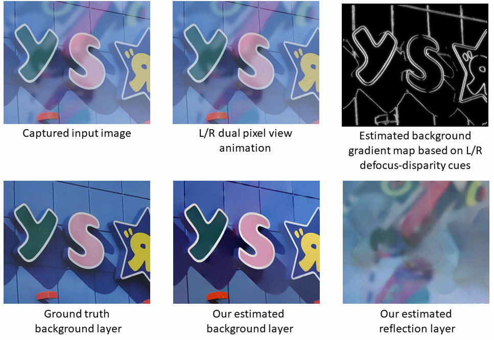
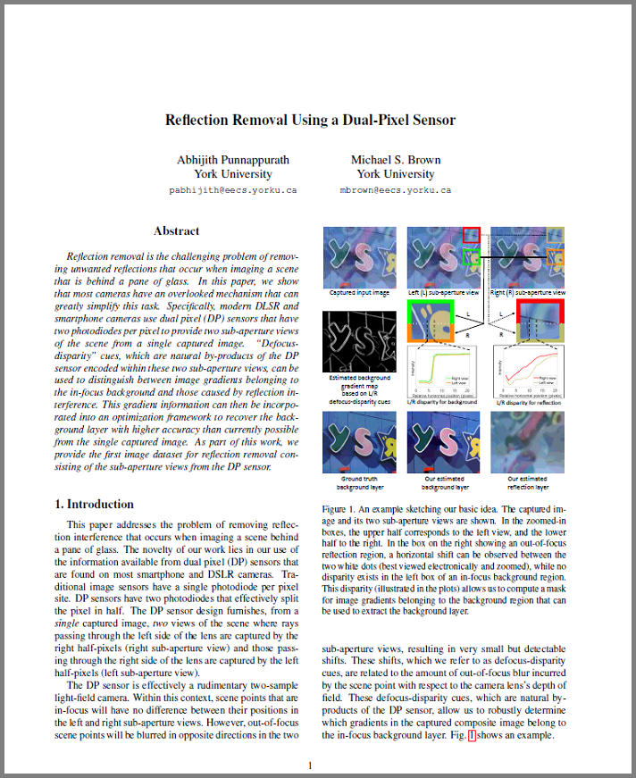

Abhijith Punnappurath and Michael S. Brown
IEEE onference on Computer Vision and Pattern Recognition (CVPR)
Long Beach, California, June 2019
[Dataset]
[Code]
Abhijith Punnappurath Michael S. Brown
York University, Toronto, Ontario, Canada
|  |
Abstract
Reflection removal is the challenging problem of removing unwanted reflections that occur when imaging a scene that is behind a pane of glass. In this paper, we show that most cameras have an overlooked mechanism that can greatly simplify this task. Specifically, modern DLSR and smartphone cameras use dual pixel (DP) sensors that have two photodiodes per pixel to provide two sub-aperture views of the scene from a single captured image. "Defocus-disparity" cues, which are natural by-products of the DP sensor encoded within these two sub-aperture views, can be used to distinguish between image gradients belonging to the in-focus background and those caused by reflection interference. This gradient information can then be incorporated into an optimization framework to recover the background layer with higher accuracy than currently possible from the single captured image. As part of this work, we provide the first image dataset for reflection removal consisting of the sub-aperture views from the DP sensor.
Downloads
|  |
"Reflection Removal Using a Dual-Pixel Sensor" Abhijith Punnappurath and Michael S. Brown IEEE onference on Computer Vision and Pattern Recognition (CVPR) Long Beach, California, June 2019 [Dataset] [Code] |
BibTex
@inproceedings{punnappurath_cvpr2019,
author = {Abhijith Punnappurath and Michael S. Brown},
title = {Reflection Removal Using a Dual-Pixel Sensor},
booktitle = {Proceeding of the IEEE Conference on Computer Vision and Pattern Recognition},
year = {2019}
}